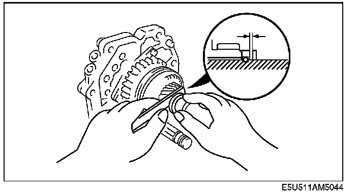

Thrust Lock Washer Assembly Note
Thrust Lock Washer Assembly Note1. Install the synchronizer ring and 5th gear.
2. Insert the steel ball and thrust lock washer.
3. Install two 3.0 mm (0.118 in) thick C-washers in the front mainshaft groove.

4. Push the C-washers fully toward 5th gear and measure the clearance between the thrust lock washer and C-washers. If the clearance in not as specified, select the proper thrust lock washer.
Clearance between thrust lock washer and C-washer:
0.1 - 0.3 mm (0.004 - 0.012 in)
Thrust lock washer thickness:
6.2 mm (0.244 in), 6.4 mm (0.252 in), 6.5 mm (0.256 in), 6.6 mm (0.260 in)
5. Install the retaining ring.